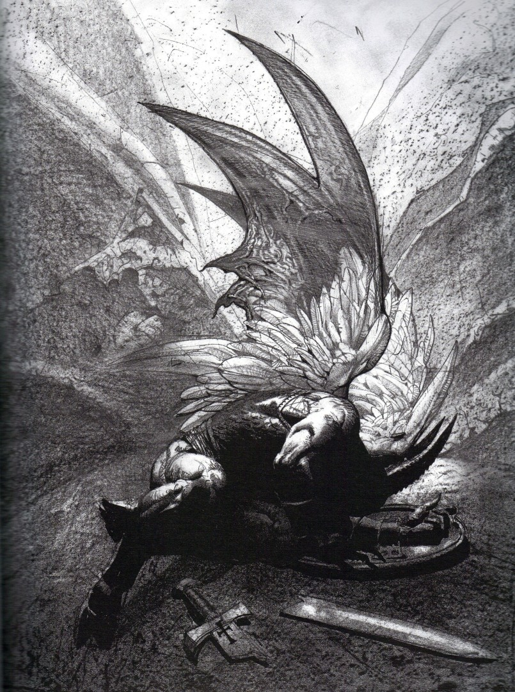

My name is Joanna, and this is a story about Hell.
How art thou fallen from heaven, O Lucifer, son of the morning!
How art thou cut down to the ground, which didst weaken the nations!
Isaiah 14:12
Imagine a bird, a bird that falls from the sky and lands violently in the dirt. Imagine being that bird. Place yourself in its body, feel its pain. Metaphors are only good for softening reality. Now imagine this: a morning star collides with the surface of a planet. Divorce yourself from the figurative and force your gaze upon the hideous violence of it; now you see the truth naked before you. The force of the physical trauma split Lucifer into three separate entities which share one consciousness; the Snake, which tempted both Eve and Jesus; the Fox, which is allowed to reside in heaven and can be recognized in the Biblical book of Job; and the Spider, which is the Lord of Hell. That place is not a shapeless, fiery pit; it is a careful (but flawed) recreation of—not just the earth—but the universe in its entirety. Envy is the sole motivation of the beings you know as “Satan”, the desire to possess that which God possesses. This desire molds everything that Satan does. When God so loved the world, Satan lusted for its own world to love. Hell is a series of grotesque replications of the world that God loved, and that Satan envies. Most of mankind’s scientifically wrong ideas have been based on realities in Hell. In Hell the universe does revolve around its earth, and it is flat, like a table with models of earthly features covering it. The center of this earth is its own version of the Garden of Eden, and at its center is a tree. That tree, the second tree that produces fruit with the power to give knowledge of good and evil, is the only thing in Hell that is identical to its earthly counterpart. The fruit is given to only the most deserving of Hell’s citizens, as a part of the ceremony in which they become High Devils. The fruit—and its knowledge—is an important part of connecting High Devils with the consciousness of Satan. Demons are the lowest caste in Hell, they are a slave race. Their behavior is entirely animal aside from their ability to speak. Demons who excel in their work may be promoted and become Hell’s lieutenants, the middle devils. Demons are subservient to all higher beings; middle devils, witches, sorcerers, non-terrestrial beings, and most of all High Devils. The High Devils don’t visit the earth very often, and you should be very thankful that they don’t.
I have no memory of my parents. They both drowned when I was two-years-old. There is no portrait, no handkerchief, no pocket watch, no music box to remember them by. My Aunt Lindsey and Uncle Franklin were written to, and after the funeral they took me to live with them outside of a town thirty miles north of my home. No one other than my parents knew my aunt and uncle very well, which I later realized is the only reason why they were allowed to take guardianship of me. Their house was one of between twenty and thirty within about a two square miles of each other; they called this place Hindlimbs. It was an isolated community which had very little contact with the outside world. I wasn’t told the true nature of our settlement until I turned ten. Lindsey asked me to walk with her into the woods to gather plants, while we searched she said it was time for me to know some things. She told me that she, my uncle, neighbors—everyone I knew—was a part of something powerful and supernatural. Hindlimbs was an occult congregation, each and every person there practiced some kind of sorcery or wizardry. Most people came from old families and were carrying on their traditions. I was a very, very rare case where someone who was virtually an outsider was allowed to come into the fold. The only reason it was allowed is because I was so young, and because I had no other family.
I was one of four children in the settlement at that time. We were taught some traditional studies; math, science, grammar; but once our basics were established the primary focus shifted to other things. A child began astrology at eleven, gathering herbs and making simple potions at twelve, incantations started at thirteen—so on and so forth. The three children other than myself were Elizabeth, Helena, and Kayin. The girls came from old families, but Kayin was an orphan like me. Lindsey told me that orphans have certain advantages when it comes to practicing magic, and it showed. Kayin and I very quickly set ourselves apart as being more capable than Elizabeth and Helena. Elizabeth was competitive, and she hated that she couldn’t be better than us. Helena, being very introverted, was content to be very good at one thing: gathering for and making potions. Kayin and I became very close—it was inevitable—and soon the two of us became practically inseparable.
I became pregnant when I was eighteen, no one needed to ask who the father was. While other teenagers faced problems with their parents in these scenarios, my complications were far more terrible. A week after discovering I was pregnant there was a visitor to my room—a visitor in my room—who came uninvited. My visitor was a middle devil that called itself Hezbah. We had come into contact many times during summonings, Hezbah had to be consulted if we wanted to summon one of its demons. We had taken many of Hezbahs minions, and now Hezbah wanted to take one of our—it wanted my child. Devils taking children is not generally abnormal, but we in Hindlimbs had always been respected and treated exceptionally well by the middle devils—this was due to certain ancestors who had somehow managed to be awarded favors by a High Devil, a very rare thing. Respect is a fleeting thing to devils, and favors don’t last forever as the power structure in Hell is constantly fluctuating and reconfiguring itself. Hezbah told me that we had taken too much and given too little throughout the years. The old ones were gone, both on earth and in Hell, and it was time for debts to be settled. I listened in silence, too scared to speak. It said that the child would be collected one week after it was born, and that giving me a week was the last courtesy that would be extended to us by the children of the Snake.
The next day I told everyone about the night before, I reconstructed each sentence exactly, as one must do when devils are involved. Lindsey and Thomas both wept violently, they fell to the ground in each other’s arms and convulsed there. Kayin’s eyes were fearful and sad. It was decided that we should take three days to think, not speaking about the matter with one another during that time. On the forth day we held another meeting. Elizabeth was the first to say that she felt sorrow for myself and for Kayin, but that she also felt an immense foreboding in Hezbah’s words about the ongoing relationship between Hindlimbs and the devils. Many felt the same way as she did. The last to speak was the eldest among us, Adelia May. Our only choice, Adelia May said, was to reshape our relationship with Hell, to fight back against Hezbah. I listened as if I were hearing a conversation from behind a door. If there was any way to save my child I was willing to do anything—no matter what the price—to accomplish that goal. My resolve was as solid as a stone set from the beginning of world; it being unmoved throughout every effort of time itself. I was told I must do something very courageous, that the peril would be unimaginable, and that success was unassured. I said yes. I offered to say yes a million times, from dusk until dawn to prove to the old ones the absolute sincerity of my commitment. I knew that I wasn’t being told every detail, but as children we were taught that the young can not know all that the elders know, nor should they want to. The burden of knowledge was on them, the burden of action was mine. Adelia May spoke to us of things which had not been discussed in a hundred years or more. There are ancient scrolls and texts that only the greatest in Hindlimbs are given access to. After reading them they that are instructed to never speak anything they’ve read unless it’s absolutely necessary. Most lived and died without ever conversing with anyone about those words. For example: there is knowledge of a weakness that all middle devils possess. Only High Devils, having eaten from the second tree, can have knowledge of God. All other demons and devils are weak against holy scriptures, holy objects and words with holy power. If a middle devil ask you for truth, and you speak the true name of God, the devil’s being will be penetrated by that truth, and Hell will release it, destroying it in the process. This was my job. The child would be hidden, Hezbah would demand to know where she was, I would wait until he specifically asked for the truth, and then I would deliver the holy name. The waiting was nearly intolerable, my eventual sickness was almost a relief by nature of its distractions. Kayin tried to be comforting, but he was more concerned than I about the consequences of what I was to do. No one spoke about what happened after you tried to kill a devil.
The final month came and preparations were made. My baby was born on a cold night in November. Her name was Adanech, “she has rescued them”. I needed to save her so that she could rescue us. Only her innocence could provide atonement for our generations of evil. I told myself this, but I knew it wasn’t true. I could see it in Adelia May’s eyes, we were reaping what we had sown. There was no redemption for us, but I placed my faith in salvation for Adanech. Maybe, even if she couldn’t rescue us, there would be someone else that she could. All my months of horrible waiting were instantly justified in one look into her eyes, eyes that reflected the antithesis of everything I had been a part of that led to that point in time. I was sorrowful that she was not born to parents who were as distanced from evil as I wished I was, I was sorrowful that I might be killed and unable to protect her, and I was sorrowful that all I had to give to her was sorrow. Six days after she was born I said goodbye to her and she was taken to a small village far away where we had allies. What followed was the most tense and brooding day of my life, the day of waiting for the devil. Hezbah arrived as the seventh day found midnight, it came to my room as before. It asked where the child was, and I said I didn’t know. It became more and more angry as it questioned me, it grew larger and larger until its limbs were constricted by the capacities of the room. “Where is the child,” it demanded, “tell me the truth!” At that moment I spoke the true name of God, which in my current state I am incapable of writing or saying, and what followed happened so quickly that I cannot accurately describe it. Hezbah made many guttural noises, and its physical form started to expand again. This time as its body met the confines of the room they, instead of folding, it began to decompose; fingers retracted into hands, legs sunk into floor, and the eyes became transparent, bulging, liquid-like containers through which I could see the walls of my room. At some point during this I lost consciousness.
When I came to I laying on the stone floor of what was, I thought, a very large room. The noise my feet made as I stood up echoed wildly; the air in the room was completely still. The area of roughly ten square feet around me was bathed in a very dim light—the source of which I couldn’t tell. Beyond that was pitch black. I tried to sense if I was alone, or if there was anything else in the room. I saw nothing, and heard nothing, until a voice came from behind me. I recognized the sound, a devil’s speech is foul and lost in time.
“Do ye know how ye came here, little bitch?”
I turned around toward the voice, unable to see anything there, and said no. A different voice, behind me again,
“Thou hast unmade Hezbah.”
I’d done it, it had worked. My relief was chocked by terror. I asked the new voice where I was, and turned toward it. A third voice answered, again from behind me,
“Ye come somewhere don’t need a fucking name, bitch.”
I knew where I was, but I didn’t know why. I breathed in, preparing my question, and received an answer without asking it. This time it was the first voice again,
“Thou art here to take Hezbah’s place, ye wear Hezbah’s skin, ye learn Hezbah’s work.”
Instantly I felt like I was being lowered into a bathtub filled with boiling hot water—but I wasn’t—I was laying on the same stone floor as when I came to. I couldn’t see any visible, physical evidence of the boiling sensation. All three of the voices were talking, the only thing I understood was the third voice saying “Thy pain ain’t over, ain’t over yet, not soon.” To attempt to describe the pain would be pointless. I would need to essentially paint you a picture using colors that don’t exist in this dimension. All I will say is this: that pain was unlike any pain you will ever feel during your life on earth. Later I was given understanding of what happened in that moment. They were melting my internal organs, I wouldn’t need them anymore. Later they burned my skin off and gave me Hezbah’s—that had not been a symbolic statement. Because I was being remade the skin bonded with me; I stepped on it and it grabbed onto me, it felt like there was an army of ants crawling up my leg.
Then the ants were covering my entire body,
and then they were crawling down my throat,
and then they were my throat.
It’s strange how quickly strangeness can leave us. One hour can change normality and negate years of what constituted normality before the change occurred. A sick person quickly forgets what it feels like to feel well. I have no recollection of what being human is like. I have memories, and emotions, but no concept of the physical parts of humanity. I can take a human form and walk on your grass and mud, but every terrestrial material feels alien to me now. Still, I’ve walked, and I searched; I searched for my Adanech. As I traveled I became aware of the various rules of my new existence, my abilities and their limitations. It took what felt like weeks—I’m unsure of time’s properties now—to realize that not only has the way I view the earth changed, the way I view events that take place on earth has changed. I am a part of Hell, and I see through Hell’s eyes. I am blind to the good in the world, blind to peace, blind to all aspects of life that reflect the presence of God. Now I know that if I ever do find my Adanech, I’ll be destroyed by what I find. This fear solidified when I found out what had become of Lindsey, Thomas, and the rest of Hindlimbs. I have no hope anymore. I know that the human characteristics I’ve retained are fading; soon I’ll be Hezbah in more ways than just common skin. Now I’ve come here to the place where Hell intersects with earth, and with Heaven. I am begging for mercy—not for myself—but for my daughter. I am the devil, and I am praying for Heaven to take my girl away from me. May I never know of her. May she forever be hidden from me and never near me in my home, in the absence of God. May she become both the rescued and the rescuer.
Once again I must destroy a devil, but now I am the offender.
“Ye hide in shit, near that Place, think we not find ye?”
There’s just enough time.
“Methinks I see thine soul, why doest thou still possess that fucking thing?”
I have just enough strength left.
“Awake, arise or be for ever fall’n.”
John Milton | Paradise Lost
————————————————————————————————————————————